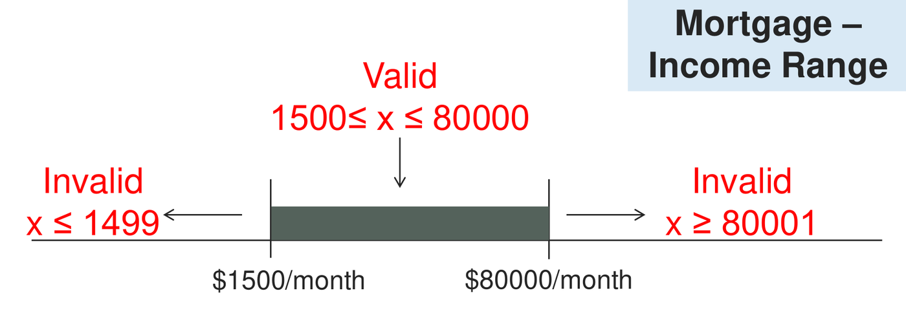
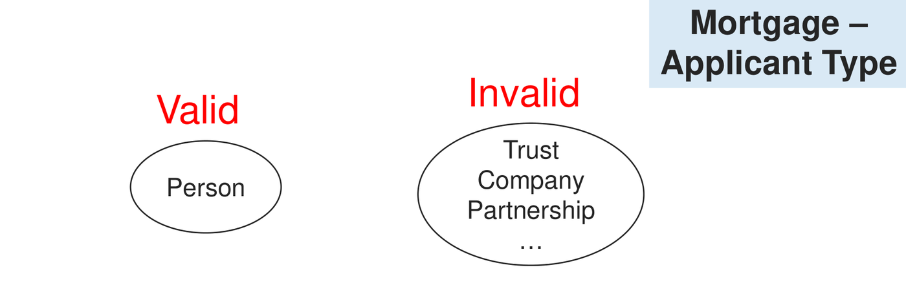

Software testing is an empirical investigation conducted to provide stakeholders with information about the quality of a software product under test. As Edsger W. Dijkstra famously observed:
“Software testing can be used to show the presence of bugs, but never to show their absence!”
Testing is distinct from debugging: testing discovers symptoms and failures caused by faults, whereas debugging isolates the root cause in source code and corrects it.
Because exhaustively testing every combination of program inputs is computationally impossible—a function taking two 16-bit integers has input combinations—testers employ systematic test design techniques. Black-box testing (specification-based testing) derives test suites exclusively from software specifications without examining the underlying source code.
1. Testing Levels and Test Case Structure
Software testing is executed systematically across four progressive stages (the V-Model hierarchy):
| Testing Level | Scope of Verification | Primary Responsible Party | Focus of Verification |
|---|---|---|---|
| Unit Testing | Individual functions, methods, or classes in isolation. | Developers | Internal algorithms, boundary conditions, logic paths. |
| Integration Testing | Interfaces and interactions between integrated units/modules. | Developers / Integrators | Data passing, API contracts, communication protocols. |
| System Testing | The completely integrated software system as a whole. | Dedicated QA / Test Team | End-to-end user workflows, functional requirements, non-functional requirements (performance, security). |
| Acceptance Testing | The complete system evaluated against business goals. | End Users / Customers | Formal sign-off (Alpha/Beta testing), contractual compliance. |
Anatomy of a Test Case
Every formal test case must contain five fundamental attributes:
- Test Case Identifier: Unique name or ID (e.g.,
TC-01). - Preconditions / Setup: Required initial system state before execution.
- Test Input: Concrete data values supplied to the system.
- Test Oracle (Expected Result): The precisely determined, correct output or system reaction worked out before execution.
- Execution Log (Actual Result): The recorded output produced during test execution. A test passes if and only if .
2. Black-Box vs. White-Box Testing
| Dimension | Black-Box Testing (Specification-Based) | White-Box Testing (Structural) |
|---|---|---|
| Primary Basis | Functional requirements and SRS specifications. | Source code, architecture, and control logic. |
| Code Visibility | Zero internal visibility; treats code as an opaque box. | Complete internal visibility; reads source code. |
| Testing Levels | Applied predominantly at System and Acceptance levels. | Applied predominantly at Unit and Integration levels. |
| Core Techniques | Equivalence Class Partitioning, Boundary Value Analysis. | Control Flow Graphs, Cyclomatic Complexity, Basis Path Testing. |
| Advantage | Tests from the user’s perspective; catches missing specifications. | Quantifiable code coverage; discovers hidden developer implementation bugs. |
| Disadvantage | Cannot assess structural code coverage or redundant code paths. | Infeasible to test all paths; cannot detect missing features. |
3. Equivalence Class Partitioning (ECP)
Equivalence Class Partitioning divides the entire input domain of a program into finite subsets called equivalence classes such that:
- All data values within an equivalence class are treated identically by the program logic.
- If one test value in an equivalence class uncovers a fault, all other values in that same class are assumed to uncover the same fault.
- If one test value produces correct behavior, all other values in that class are assumed to succeed.
Testing one representative value from each equivalence class is sufficient to represent the entire class.

Partitioning Rules
- Continuous Range
:
Specifying a valid numerical range between
and
generates three equivalence classes:
- One Valid Equivalence Class: All values inside ().
- Two Invalid Equivalence Classes: Values strictly below () and values strictly above ().
- Discrete Finite Set
:
Specifying a finite enumerated set of valid values generates
two equivalence classes:
- One Valid Equivalence Class: Any element belonging to the set ().
- One Invalid Equivalence Class: Any element outside the set ().

4. Boundary Value Analysis (BVA)
Empirical software engineering demonstrates that the majority of
software faults cluster directly at the boundaries of
input ranges rather than in the center. Developers frequently make
off-by-one errors, confusing strict inequalities (<,
>) with inclusive inequalities (<=,
>=).
Boundary Value Analysis (BVA) complements Equivalence Partitioning by specifically selecting test values located directly at and adjacent to class edges.
The Boundary Value Triplet
For every boundary point , three values must be tested:
Where represents the smallest discrete increment of the data type under test (e.g. for integers, for currency, for timestamps).
[!WARNING] Discrete Sets Have No Boundary Values: Discrete categorical inputs (such as
{Open, Closed}or{Red, Blue, Green}) have no ordinal continuum. They have zero boundary values. Only continuous numerical, date, or ordinally sequenced ranges possess boundaries.
5. Defensive Test Case Design Protocol
When combining multiple inputs to create an operational test suite, apply the Single Fault Assumption (Robustness Testing):
- State Assumptions Clearly: Explicitly record input domains, inclusive/exclusive bounds, and discrete step resolutions ().
- Identify Equivalence Classes & Boundaries for Every
Input:
- For continuous ranges: 1 valid class, 2 invalid classes. Identify boundary triplets.
- For discrete sets: 1 valid class, 1 invalid class. Zero boundary values.
- Construct Valid Test Cases:
- Combine valid boundary values across all inputs.
- All inputs in a valid test case must be simultaneously valid.
- Construct Invalid (Defensive) Test Cases:
- The Golden Single-Fault Rule: Every invalid test case must contain exactly ONE invalid input value, while holding all other inputs at valid values!
- Why? If a test case contains two simultaneous invalid inputs (e.g. invalid humidity and invalid temperature) and fails, you cannot know whether both checks worked or whether the system rejected the input early and completely bypassed the second validation check!
6. Official Tutorial Problems
Tutorial 8 Q1: Equivalence partitioning, boundary values, and defensive test suite for Grain Elevator System
Question: Consider the Grain Elevator System (GES) where a silo can accept grain only when atmospheric conditions fall within safe operating thresholds:
- Relative Humidity: Normal range is between 35% and 50% inclusive.
- Temperature: Normal range is between 40°F and 60°F inclusive.
- Sensor Limits: Humidity sensor measures integer values from 0% to 100%. Temperature sensor measures integer values from -10°F to 100°F.
(a) Identify the equivalence classes and boundary values for Humidity and Temperature. (b) Construct a defensive test case table with test inputs and expected outcomes.
Solution:
Part (a): Equivalence Classes and Boundary Values
Assuming integer readings ():
1. Relative Humidity (Range: , Normal: )
| Class Type | Equivalence Class | Boundary Values Tested | Status |
|---|---|---|---|
| Invalid Class 1 | Just below: , On: , Just above: | Reject | |
| Valid Class | Just below: , On: , Just above: | Accept | |
| Invalid Class 2 | Just below: , On: , Just above: | Reject |
Consolidated Humidity Boundary Values:
- Lower edge (): (Invalid), (Valid)
- Upper edge (): (Valid), (Invalid)
- Extreme sensor limits: (Invalid), (Invalid)
- Out-of-bounds sensor faults: (Error), (Error)
2. Temperature (Range: , Normal: )
| Class Type | Equivalence Class | Boundary Values Tested | Status |
|---|---|---|---|
| Invalid Class 1 | Just below: , On: , Just above: | Reject | |
| Valid Class | Just below: , On: , Just above: | Accept | |
| Invalid Class 2 | Just below: , On: , Just above: | Reject |
Consolidated Temperature Boundary Values:
- Lower edge (): (Invalid), (Valid)
- Upper edge (): (Valid), (Invalid)
- Extreme sensor limits: (Invalid), (Invalid)
- Out-of-bounds sensor faults: (Error), (Error)
Part (b): Defensive Test Cases Table
Applying the Single Fault Assumption:
- Valid combinations: Pair all valid boundary values ( for Humidity with for Temperature).
- Invalid combinations: Test each invalid boundary value while holding the other parameter strictly valid.
| Test Case | Humidity (%) | Temperature (°F) | Tested Parameter | Expected Result (Oracle) |
|---|---|---|---|---|
| TC-01 | 35 | 40 | Valid boundary combination (Min valid) | Accept Grain |
| TC-02 | 35 | 60 | Valid boundary combination | Accept Grain |
| TC-03 | 50 | 40 | Valid boundary combination | Accept Grain |
| TC-04 | 50 | 60 | Valid boundary combination (Max valid) | Accept Grain |
| TC-05 | 34 | 50 | Invalid Humidity (just below min valid) | Reject (Humidity too low) |
| TC-06 | 0 | 50 | Invalid Humidity (sensor min bound) | Reject (Humidity too low) |
| TC-07 | 51 | 50 | Invalid Humidity (just above max valid) | Reject (Humidity too high) |
| TC-08 | 100 | 50 | Invalid Humidity (sensor max bound) | Reject (Humidity too high) |
| TC-09 | -1 | 50 | Out-of-range Humidity | Sensor Error Exception |
| TC-10 | 101 | 50 | Out-of-range Humidity | Sensor Error Exception |
| TC-11 | 45 | 39 | Invalid Temp (just below min valid) | Reject (Temp too low) |
| TC-12 | 45 | -10 | Invalid Temp (sensor min bound) | Reject (Temp too low) |
| TC-13 | 45 | 61 | Invalid Temp (just above max valid) | Reject (Temp too high) |
| TC-14 | 45 | 100 | Invalid Temp (sensor max bound) | Reject (Temp too high) |
| TC-15 | 45 | -11 | Out-of-range Temp | Sensor Error Exception |
| TC-16 | 45 | 101 | Out-of-range Temp | Sensor Error Exception |
Verification:
- All 4 valid boundary combinations pass.
- In every rejection test case (TC-05 through TC-16), exactly one parameter is invalid while the other is set to an uncontroversial, interior valid value ( or ).